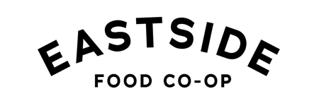
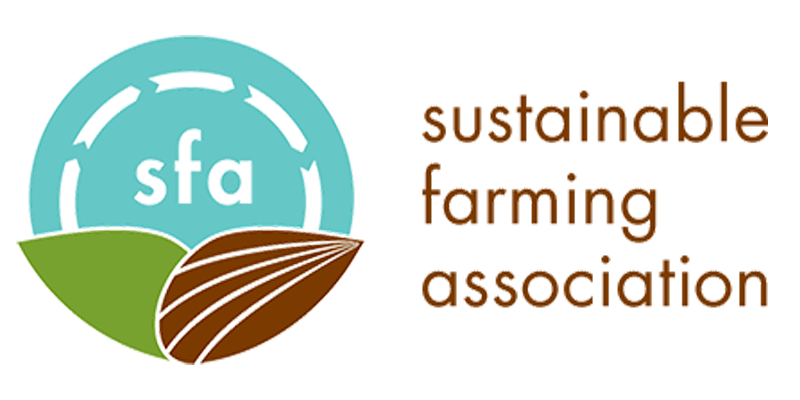
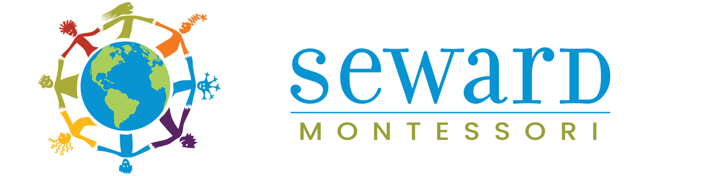
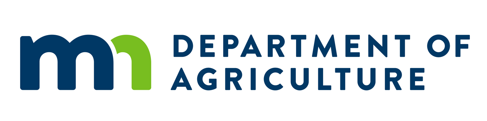
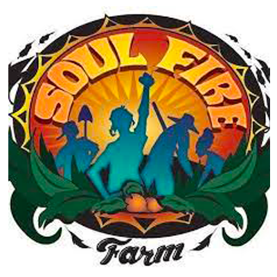
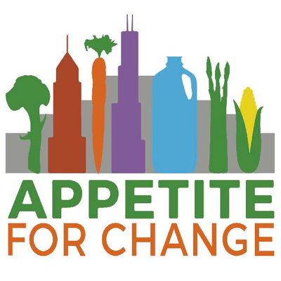
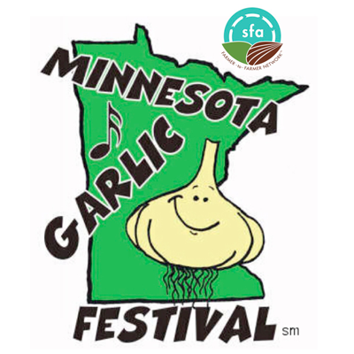
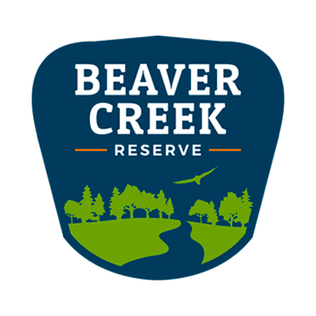

Hello, this is a statement that emphasizes my commitment and works in the holistic health, herbalism, farming and food justice. This can be 2-5 sentences weaving these areas of care together.
Sweetleaf is building a safe and healing cooperative space for BIPOC artists, healers, educators and community to gather, learn, create, connect, envision, receive, replenish and revitalize the ways we care for ourselves, one another, our communities. We are dedicated to providing programming, activities, training, skillshares, healing circles, ceremonies and events that bring nourishment, connectivity and growth for everyone involved.
◘
Leaderhsip Team, The Urban Bird Collective
2018- 2023
The Urban Bird Collective supports birdwatchers of different skill levels in leading walks in our own neighborhoods. We are passionate about birdwatching and the protection of the environment. We are working to create safe and welcoming spaces for all communities to come out and explore birding and the outdoors.These communities include Black, Indigenous, People of Color, the LGBTQ Communities and more.
◘
Director of Stewardship & Education, Friends of the Mississippi River
2022 - 2023
At Friends of the Mississippi River, I supervised a team of all BIPOC staff advocating for their health, safety and success in the environmental working world. delegated appropriate tasks to keep us on a human centered pace to meet our goals; volunteers and a youth EJ Council.
◘
Food Justice & Culinary Arts Educator, Midwest Food Connection
2018 - 2023
Through Midwest Food Connection, I taught students pre-k - highschool students and families in classroos, gardens and on farms, often using storytelling, art, song, and hands-on learning to create life lasting impressions, deep connections and healthy youth leadership. I've developed cirriculum and care for three community learning gardens, centering the East and West Africans living there.
◘
Operations Team, Food Justice Summit
2018 - 2019
In conjunction with the marketing and event planning teams, the operations team worked collaboratively to bring a memorable experience for all participants. It was our duty to secure speakers, create a schedule of speakers/events, come up with activites and interactive art during the Food Justice Summit. I also facilitated interviews to create a 20-minute long video to be displayed in the commons area.
◘
Community Canning Series
2018 - 2019
Simone Rendon, Gina Salvado and myself teamed up to offer a series of canning workshops during the summer of 2018 and 2019. Robert Two Bulls of Department of Indian Works and Multicultural Ministries for the Episcopal church in MN, allowed us to use the commercial kitchen space of an indigenous-led church. We made sauces, jellies and jams from scratched and provided the knowledge to raise the confidence in and canning skills of QT2S Black, Brown and Indigenous Folx.
Contracted Services with Many Organizations, Including:








Trainings
◘
Energetic Herbalism Certificate with the American Herbalist Guild, 2023
◘
Regenerative Agriculture and Soil Health Course, 2023
◘
Seed Saving Course with Organic Seed Alliance, 2023
◘
Soul Fire Farm Immersion, 2022
◘
Nexus North Star's Black Co-operative Fellowship, 2022
◘
Healing Herbal Oils Certificate from Kami Mcbride, 2022
◘
Cupping I and Cupping II Certificate, 2020 and 2022
◘
Farm Beginnings Course with Land Stewardship Proect, 2020
◘
Accupressure and Ear Seeds Training, 2019
◘
Deescalation Training with Black Visions Collective, 2019
◘
Herbal Certificate from Chesnut School of Herbalism, 2019